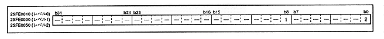

Register that allows DMA execution. When the DMA is operating, the register at that level is write-protected. Figure 3.9 shows the format of this register.
Figure 3.9 Level 2-0 DMA enable bits (registers: D0EN, D1EN, D2EN) Initial value 00000000H
